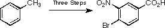

The transformation shown to the right can be accomplished in three steps. The methyl group can be oxidized to a carboxylic acid group, so two additional substituents need to be attached to the benzene ring. There are six possible combinations of these three steps, not all of which will lead to the desired compound. Consequently, it is important to combine them in an effective manner. The column on the left below outlines the kinds of reactions we may wish to consider for this synthesis. |
 |